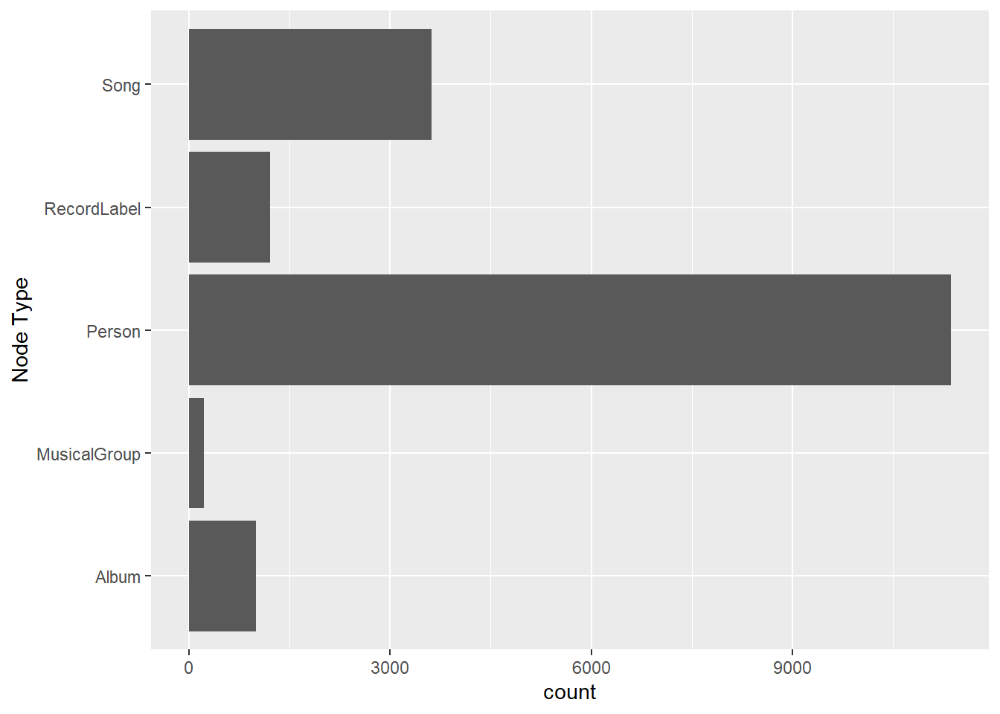

Code
pacman::p_load(tidyverse, jsonlite, SmartEDA, tidygraph, ggraph, dplyr)Background Sailor Shift, a global superstar from Oceanus, began her career in “Oceanus Folk” music before achieving worldwide fame in 2028 with a chart-topping viral single. Passionate about promoting Oceanus Folk and supporting emerging artists, she frequently collaborates with established musicians. She was briefly part of the all-female band Ivy Echoes (2023–2026), whose members later pursued solo careers, further spreading the genre’s influence. In 2040, journalist Silas Reed aims to analyze Sailor’s rise and Oceanus Folk’s impact using a knowledge graph, requiring insightful visualizations to uncover her legacy and the genre’s evolution.
Explore and understand the profile of Sailor Shift’s career
Illustrate how the influence of Oceanus Folk has spread through the musical world.
Develop a profile of what it means to be a rising star in the music industry
pacman::p_load(tidyverse, jsonlite, SmartEDA, tidygraph, ggraph, dplyr)kg <- fromJSON("data/MC1_release/MC1_graph.json")str(kg, max.level = 1)List of 5
$ directed : logi TRUE
$ multigraph: logi TRUE
$ graph :List of 2
$ nodes :'data.frame': 17412 obs. of 10 variables:
$ links :'data.frame': 37857 obs. of 4 variables:nodes_tbl <- as_tibble(kg$nodes)
edges_tbl <- as_tibble(kg$links) ggplot(data = edges_tbl,
aes(y = `Edge Type`)) +
geom_bar()
ggplot(data = nodes_tbl,
aes(y = `Node Type`)) +
geom_bar()
id_map <- tibble(id = nodes_tbl$id,
index = seq_len(
nrow(nodes_tbl)))This ensures each id from node list is mapped to the correct row number
edges_tbl <- edges_tbl %>%
left_join(id_map, by = c("source" = "id")) %>%
rename(from = index) %>%
left_join(id_map, by = c("target" = "id")) %>%
rename(to = index)edges_tbl <- edges_tbl %>%
filter(!is.na(from), !is.na(to))Lastly, tbl_graph() is used to create tiidygraph’s graph object by using the code chunk below
graph <- tbl_graph(nodes = nodes_tbl,
edges = edges_tbl,
directed = kg$directed)set.seed(1234)sailor_id <- nodes_tbl %>%
filter(name == "Sailor Shift") %>%
pull(id)
sailor_works <- edges_tbl %>%
filter(source == sailor_id, `Edge Type` %in% c("PerformerOf", "ComposerOf", "LyricistOf", "ProducerOf")) %>%
pull(target)
influence_edges <- edges_tbl %>%
filter(source %in% sailor_works,
`Edge Type` %in% c("InStyleOf", "InterpolatesFrom", "CoverOf", "DirectlySamples"))
influencing_creators <- edges_tbl %>%
filter(`Edge Type` %in% c("PerformerOf", "ComposerOf", "LyricistOf", "ProducerOf"),
target %in% influence_edges$target) %>%
pull(source) %>%
unique()influencer_summary <- edges_tbl %>%
filter(`Edge Type` %in% c("PerformerOf", "ComposerOf", "LyricistOf", "ProducerOf"),
target %in% influence_edges$target) %>%
group_by(source) %>%
summarise(times = n()) %>%
left_join(nodes_tbl, by = c("source" = "id")) %>%
arrange(desc(times)) %>%
select(name, `Node Type`, times)library(ggplot2)
ggplot(influencer_summary[1:10, ], aes(x = reorder(name, times), y = times)) +
geom_col(fill = "steelblue") +
coord_flip() +
labs(title = "Top Influencers of Sailor Shift",
x = "Artist", y = "Number of Influenced Works") +
theme_minimal()sailor_id <- nodes_tbl %>%
filter(name == "Sailor Shift") %>%
pull(id)
sailor_edges <- edges_tbl %>%
filter(source == sailor_id,
`Edge Type` %in% c("PerformerOf", "ComposerOf", "LyricistOf", "ProducerOf", "MemberOf"))
# Works with sailor（songs, albums, groups）
sailor_works <- sailor_edges$target
co_edges <- edges_tbl %>%
filter(target %in% sailor_works,
`Edge Type` %in% c("PerformerOf", "ComposerOf", "LyricistOf", "ProducerOf", "MemberOf"),
source != sailor_id)collaborators <- co_edges %>%
count(source, sort = TRUE) %>%
left_join(nodes_tbl, by = c("source" = "id")) %>%
select(name, n) %>%
rename(times = n)library(ggplot2)
ggplot(collaborators[1:10, ], aes(x = reorder(name, times), y = times)) +
geom_col(fill = "darkorange") +
coord_flip() +
labs(title = "Top Collaborators of Sailor Shift",
x = "Artist", y = "Number of Collaborations") +
theme_minimal()Separate the question:
Step 1: Find works Sailor involved in
Step 2: Find who are influenced by Sailor
Step 3: Count the frequency and see who are most influenced
sailor_id <- nodes_tbl %>% filter(name == "Sailor Shift") %>% pull(id)
sailor_works <- edges_tbl %>%
filter(source == sailor_id,
`Edge Type` %in% c("PerformerOf", "ComposerOf", "LyricistOf", "ProducerOf")) %>%
pull(target)
downstream_edges <- edges_tbl %>%
filter(`Edge Type` %in% c("InStyleOf", "InterpolatesFrom", "CoverOf", "DirectlySamples"),
target %in% sailor_works)
influenced_creators <- edges_tbl %>%
filter(`Edge Type` %in% c("PerformerOf", "ComposerOf", "LyricistOf", "ProducerOf"),
target %in% downstream_edges$source)
influenced_artists <- influenced_creators %>%
left_join(nodes_tbl, by = c("source" = "id")) %>%
filter(str_detect(tolower(genre), "oceanus folk") | str_detect(tolower(name), "oceanus")) #
library(dplyr)
top_influenced <- influenced_artists %>%
count(name, sort = TRUE)sub_nodes_ids <- unique(c(
sailor_id,
sailor_works,
downstream_edges$source,
influenced_creators$source
))
sub_nodes <- nodes_tbl %>%
filter(id %in% sub_nodes_ids) %>%
mutate(index = row_number())
id_map <- sub_nodes %>% select(id, index)
sub_edges <- edges_tbl %>%
filter(source %in% sub_nodes_ids, target %in% sub_nodes_ids) %>%
left_join(id_map, by = c("source" = "id")) %>%
rename(temp_from = index) %>%
left_join(id_map, by = c("target" = "id")) %>%
rename(temp_to = index) %>%
filter(!is.na(temp_from), !is.na(temp_to)) %>%
transmute(from = temp_from, to = temp_to, `Edge Type`)
influence_graph <- tbl_graph(nodes = sub_nodes, edges = sub_edges, directed = TRUE)library(ggraph)
ggraph(influence_graph, layout = "fr") +
geom_edge_link(arrow = arrow(length = unit(2, 'mm')), alpha = 0.5) +
geom_node_point(aes(color = ifelse(name == "Sailor Shift", "Sailor", "Other")), size = 4) +
geom_node_text(aes(label = name), repel = TRUE, size = 3) +
scale_color_manual(values = c("Sailor" = "tomato", "Other" = "steelblue")) +
theme_void()oceanus_nodes <- nodes_tbl %>%
filter(str_detect(tolower(genre), "oceanus folk"))
oceanus_ids <- oceanus_nodes$id
edge_types_influence <- c("InStyleOf", "LyricalReferenceTo", "CoverOf", "InterpolatesFrom", "DirectlySamples")
influence_edges <- edges_tbl %>%
filter(source %in% oceanus_ids, `Edge Type` %in% edge_types_influence)
influenced_nodes <- nodes_tbl %>%
filter(id %in% influence_edges$target)
influenced_summary <- influenced_nodes %>%
count(genre, sort = TRUE)
sub_nodes <- nodes_tbl %>%
filter(id %in% unique(c(influence_edges$source, influence_edges$target))) %>%
mutate(index = row_number())
id_map <- sub_nodes %>% select(id, index)
sub_edges <- influence_edges %>%
left_join(id_map, by = c("source" = "id")) %>%
rename(temp_from = index) %>%
left_join(id_map, by = c("target" = "id")) %>%
rename(temp_to = index) %>%
filter(!is.na(temp_from), !is.na(temp_to)) %>%
transmute(from = temp_from, to = temp_to, `Edge Type`)library(visNetwork)
nodes_vn <- sub_nodes %>%
mutate(id = index,
label = name,
group = genre,
title = paste0("<b>", name, "</b><br>Type: ", `Node Type`, "<br>Genre: ", genre)) %>%
select(id, label, group, title)
edges_vn <- sub_edges %>%
mutate(title = `Edge Type`) %>%
select(from, to, title)
visNetwork(nodes_vn, edges_vn, height = "600px", width = "100%") %>%
visEdges(arrows = "to") %>%
visOptions(highlightNearest = TRUE, nodesIdSelection = TRUE) %>%
visLegend() %>%
visLayout(randomSeed = 42)oceanus_nodes <- nodes_tbl %>%
filter(str_detect(tolower(genre), "oceanus folk"))
oceanus_ids <- oceanus_nodes$id
edge_types_influence <- c("InStyleOf", "LyricalReferenceTo", "CoverOf", "InterpolatesFrom", "DirectlySamples")
influenced_edges <- edges_tbl %>%
filter(source %in% oceanus_ids,
`Edge Type` %in% edge_types_influence)
influenced_targets <- nodes_tbl %>%
filter(id %in% influenced_edges$target) %>%
filter(!is.na(release_date) | !is.na(written_date)) %>%
mutate(year = as.integer(substr(coalesce(release_date, written_date), 1, 4))) %>%
filter(!is.na(year))
influence_yearly <- influenced_targets %>%
count(year) %>%
arrange(year)
library(ggplot2)
ggplot(influence_yearly, aes(x = year, y = n)) +
geom_line(color = "steelblue", size = 1.2) +
geom_point(color = "tomato", size = 2) +
labs(title = "Oceanus Folk Influence Over Time",
x = "Year", y = "Number of Influenced Works") +
theme_minimal()oceanus_nodes <- nodes_tbl %>%
filter(str_detect(tolower(genre), "oceanus folk"))
oceanus_ids <- oceanus_nodes$id
edge_types_influence <- c("InStyleOf", "LyricalReferenceTo", "CoverOf", "InterpolatesFrom", "DirectlySamples")
influence_edges <- edges_tbl %>%
filter(source %in% oceanus_ids,
`Edge Type` %in% edge_types_influence)influenced_nodes <- nodes_tbl %>%
filter(id %in% influence_edges$target)top_genres <- influenced_nodes %>%
filter(!is.na(genre)) %>%
count(genre, sort = TRUE)
top_artists <- influenced_nodes %>%
filter(`Node Type` == "Person") %>%
count(name, sort = TRUE)library(ggplot2)
ggplot(top_genres[1:10, ], aes(x = reorder(genre, n), y = n)) +
geom_col(fill = "darkgreen") +
coord_flip() +
labs(title = "Top Genres Influenced by Oceanus Folk",
x = "Genre", y = "Number of Influenced Nodes") +
theme_minimal()oceanus_nodes <- nodes_tbl %>%
filter(str_detect(tolower(genre), "oceanus folk"),
`Node Type` %in% c("Song", "Album")) oceanus_with_year <- oceanus_nodes %>%
filter(!is.na(release_date) | !is.na(written_date)) %>%
mutate(year = as.integer(substr(coalesce(release_date, written_date), 1, 4))) %>%
filter(!is.na(year))library(tidyr)
genre_by_year <- oceanus_with_year %>%
separate_rows(genre, sep = ",\\s*") %>%
count(year, genre) %>%
arrange(year, desc(n))ggplot(genre_by_year, aes(x = year, y = n, fill = genre)) +
geom_area(alpha = 0.7) +
labs(title = "Evolution of Oceanus Folk and Related Genres",
x = "Year", y = "Number of Works") +
theme_minimal()oceanus_ids <- nodes_tbl %>%
filter(str_detect(tolower(genre), "oceanus folk")) %>%
pull(id)
folk_artists <- edges_tbl %>%
filter(target %in% oceanus_ids,
`Edge Type` %in% c("PerformerOf", "ComposerOf", "LyricistOf", "ProducerOf")) %>%
pull(source) %>%
unique()
candidate_artists <- nodes_tbl %>%
filter(id %in% folk_artists, `Node Type` == "Person", name != "Sailor Shift")artist_activity <- edges_tbl %>%
filter(source %in% candidate_artists$id,
`Edge Type` %in% c("PerformerOf", "ComposerOf", "LyricistOf", "ProducerOf")) %>%
count(source, name = "num_works")sailor_id <- nodes_tbl %>% filter(name == "Sailor Shift") %>% pull(id)
sailor_works <- edges_tbl %>%
filter(source == sailor_id,
`Edge Type` %in% c("PerformerOf", "ComposerOf", "LyricistOf", "ProducerOf")) %>%
pull(target)
collab_with_sailor <- edges_tbl %>%
filter(target %in% sailor_works,
source %in% candidate_artists$id) %>%
distinct(source) %>%
mutate(collab_sailor = 1)artist_influenced <- edges_tbl %>%
filter(`Edge Type` %in% c("InStyleOf", "CoverOf", "DirectlySamples"),
target %in% edges_tbl$target[edges_tbl$source %in% candidate_artists$id]) %>%
count(source, name = "num_influenced")candidates <- candidate_artists %>%
left_join(artist_activity, by = c("id" = "source")) %>%
left_join(artist_influenced, by = c("id" = "source")) %>%
left_join(collab_with_sailor, by = c("id" = "source")) %>%
mutate(across(c(num_works, num_influenced, collab_sailor), ~replace_na(., 0))) %>%
mutate(score = num_works + num_influenced * 2 + collab_sailor * 3)Predictions base on the result
top_candidates <- candidates %>%
arrange(desc(score)) %>%
select(name, num_works, num_influenced, collab_sailor, score) %>%
slice(1:3)
top_candidates# A tibble: 3 × 5
name num_works num_influenced collab_sailor score
<chr> <int> <int> <dbl> <dbl>
1 Yang Wan 30 0 0 30
2 Rüdiger Graf 18 0 0 18
3 Filippo Pelli 17 0 0 17